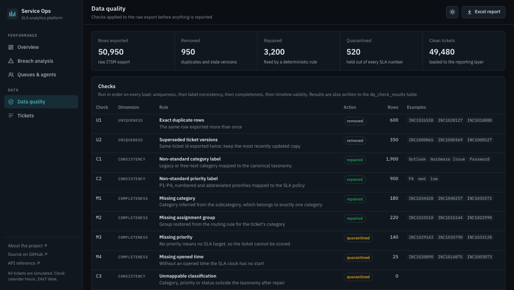
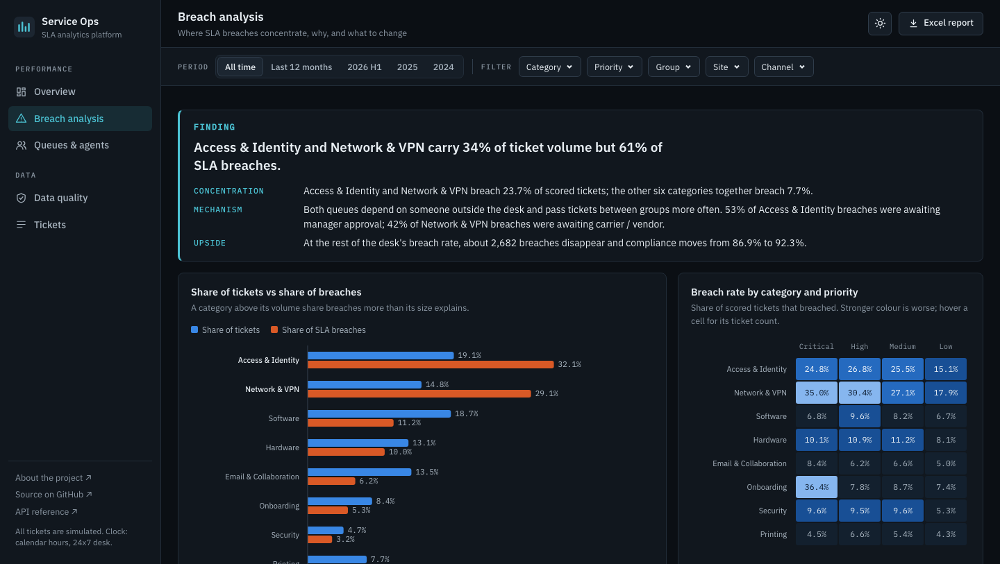
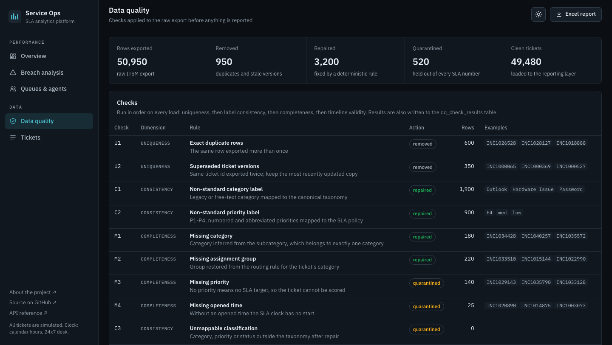

Project 04 / IT service operations & analytics
IT Service Ops & SLA Analytics Platform
An analytics platform for a service desk: 50,000 simulated tickets pass through an automated data-quality gate into MySQL reporting views, then out to a live dashboard, an Excel report and a Power BI model that track volume, backlog, resolution time and SLA compliance.
- Data
- 50,000 simulated tickets
Jan 2024 – Jun 2026 - Desk
- 8 categories · 6 groups
21 agents · 5 sites - SLA policy
- P1 4 h · P2 8 h
P3 24 h · P4 72 h · goal 90% - Stack
- Python · SQL · MySQL
Power BI · Excel · FastAPI
All figures computed from the 50,000-ticket simulation after the data-quality gate, snapshot 30 June 2026. Compliance counts resolved tickets and open tickets already past target; open tickets still inside target are not scored yet.
The thirty-second version
Breaches are concentrated, not spread
Access & Identity and Network & VPN breach 23.7% of scored tickets. The other six categories together breach 7.7%. A desk-wide push would spend most of its effort where the problem is not.
The cause is waiting and hand-offs
Access tickets that waited on manager approval breached 49.7% of the time, against 13.6% without the wait. Network tickets handed off twice or more breached 39.0%, against 19.5% when the first group kept them.
The numbers had to be earned first
The raw export held duplicates, stale copies, drifting labels and impossible timelines. An automated gate removed 950 rows, repaired 3,200 and quarantined 520 before any SLA number was calculated. Each check is tested against a known answer key.
The dashboard
Five views over one set of SQL rules
Every chart and table is a parameterised query against the same reporting views that feed the Excel report and the Power BI model. One filter bar (period, category, priority, group, site, channel) drives every view and lives in the URL, so a filtered view can be shared as a link.



Overview
Tickets, SLA and first-response compliance, median and 90th-percentile resolution, backlog and its age.
Breach analysis
Share of tickets against share of breaches, a category-by-priority heatmap, Pareto and drivers.
Recommendations
Three actions generated from measured mechanisms, each with evidence and an owner.
Queues & agents
Workload, hand-offs and compliance by resolver group, and an agent scorecard read within groups.
Data quality
Gate totals, every check, repairs applied and the quarantine for owners to correct at source.
Tickets
All 49,480 tickets with SLA outcome: search, sort, filter and export to CSV.
Where breaches concentrate
Two queues breach far beyond their size
A category whose orange bar is longer than its blue bar breaches more than its volume explains. Only Access & Identity and Network & VPN do, and by roughly double.
| Category | Tickets | Breaches | Breach rate | Share of tickets | Share of breaches | Cumulative |
|---|---|---|---|---|---|---|
| 1. Access & Identity | 9,424 | 2,083 | 22.1% | 19.1% | 32.1% | 32.1% |
| 2. Network & VPN | 7,344 | 1,890 | 25.8% | 14.8% | 29.1% | 61.2% |
| 3. Software | 9,239 | 727 | 7.9% | 18.7% | 11.2% | 72.4% |
| 4. Hardware | 6,503 | 652 | 10.0% | 13.1% | 10.0% | 82.4% |
| 5. Email & Collaboration | 6,691 | 403 | 6.0% | 13.5% | 6.2% | 88.7% |
| 6. Onboarding | 4,157 | 341 | 8.2% | 8.4% | 5.2% | 93.9% |
| 7. Security | 2,314 | 207 | 8.9% | 4.7% | 3.2% | 97.1% |
| 8. Printing | 3,808 | 189 | 5.0% | 7.7% | 2.9% | 100.0% |
Breach Pareto from the vw_category_pareto view. Highlighted rows are the two focus categories.
Why they breach
Work that waits on someone outside the desk
Splitting the two categories by third-party wait and by hand-off count shows the same mechanism in both. The ticket is not hard to fix; it stops moving.
| Breach rate in | With the wait | Without | Handed off 2+ times | Kept by first group |
|---|---|---|---|---|
| Access & Identity (manager approval) | 49.7% | 13.6% | 33.5% | 17.0% |
| Network & VPN (carrier / vendor) | 60.3% | 18.2% | 39.0% | 19.5% |
53% of Access & Identity breaches waited on an approver, and 42% of Network & VPN breaches waited on a carrier or vendor. Both queues also change hands about four times as often as the rest of the desk. Priority does not rescue them: Critical and High tickets have the lowest compliance on the desk, because a 4- or 8-hour target leaves no room for a wait.
| Priority | Resolution target | Tickets | Avg resolution | SLA compliance |
|---|---|---|---|---|
| P1 Critical | 4.0 h | 1,651 | 15.5 h | 82.6% |
| P2 High | 8.0 h | 7,357 | 16.9 h | 83.7% |
| P3 Medium | 24.0 h | 23,937 | 25.8 h | 85.5% |
| P4 Low | 72.0 h | 16,535 | 44.1 h | 90.7% |
Data quality
Every row is repaired, quarantined or removed, and counted
The raw export has 50,950 rows. Fifteen checks run in a fixed order: uniqueness, then label consistency, then completeness, then timeline validity. Nothing is dropped silently. Repairs are recorded on the ticket, the quarantine keeps the raw record and its reason, and results are written to a dq_check_results table on every load.
| Check | Dimension | Action | Rows |
|---|---|---|---|
| U1 Exact duplicate rows | Uniqueness | removed | 600 |
| U2 Superseded ticket versions | Uniqueness | removed | 350 |
| C1 Non-standard category label | Consistency | repaired | 1,900 |
| C2 Non-standard priority label | Consistency | repaired | 900 |
| M1 Missing category | Completeness | repaired | 180 |
| M2 Missing assignment group | Completeness | repaired | 220 |
| M3 Missing priority | Completeness | quarantined | 140 |
| M4 Missing opened time | Completeness | quarantined | 25 |
| V1 Opened after the export | Validity | quarantined | 15 |
| V2 Resolved before opened | Validity | quarantined | 120 |
| V3 Responded before opened | Validity | quarantined | 60 |
| V4 Closed before resolved | Validity | quarantined | 50 |
| V5 Resolved status without a resolved time | Validity | quarantined | 70 |
| V6 Open status with a resolved time | Validity | quarantined | 40 |
50,950 rows in → 950 removed · 3,200 repaired · 520 quarantined → 49,480 clean tickets. The defects are injected into known tickets, so the tests assert each check finds exactly those rows, and that the gate finds nothing when run on its own output.
Over time
Below goal every month, worst when the queues flood
Compliance by the month tickets were opened. The dips line up with incidents: the VPN concentrator failure in February 2025, the Windows 11 migration in autumn 2025 and the MFA policy roll-out in March 2026. The lowest month was February 2025 at 83.5%.
Median resolution 11.7 h, 90th percentile 46.4 h. 50 tickets were open at the snapshot.
How it works
From a messy export to three outputs that agree
A realistic desk
50,000 tickets with weekday and seasonal arrival, queue pressure, hand-offs, third-party waits and four dated incidents, exported with 14 defect classes.
Automated quality checks
Duplicates, missing fields, inconsistent classifications and invalid timelines are caught before reporting, then repaired or quarantined.
SQL reporting layer
A MySQL 8 schema and 13 views with CTEs and window functions, written in SQL that SQLite also runs, so the tests can compare both.
Dashboard, Excel, Power BI
A FastAPI dashboard of filtered queries, a nine-sheet Excel workbook with native charts, and a Power BI star schema with matching DAX measures.
Recommendations
Three changes, each aimed at a measured cause
The recommendations are generated from the query results, so their evidence updates with the data. Each names an owner, because a finding without one rarely changes a queue.
Recommendation 1
Take manager approval off the critical path for access requests
52.8% of Access & Identity breaches sat waiting on approval. Tickets that waited breached 49.7% of the time, against 13.6% for those that did not.
Action. Publish pre-approved, role-based access bundles for the common requests, and send an automatic reminder to the approver at 50% of the SLA with escalation to their delegate at 75%.
Owner: Identity & Access leadRecommendation 2
Route connectivity tickets straight to Network Operations
Network & VPN tickets that changed hands two or more times breached 39.0% of the time, against 19.5% when the first group kept them; carrier waits pushed the rate to 60.3%.
Action. Add portal and email routing rules that send VPN, Wi-Fi and site outage tickets to Network Operations on creation, and agree a response-time clause with the carrier so vendor waits have a contractual ceiling.
Owner: Network Operations managerRecommendation 3
Watch the two queues with an at-risk alert
If Access & Identity and Network & VPN breached at the rest of the desk's rate (7.7%), about 2,682 breaches would not have happened and compliance would rise from 86.87% to 92.3%.
Action. Alert the resolver group when a ticket in either category reaches 75% of its target, and review both queues weekly until their breach rate is within two points of the desk average.
Owner: Service desk managerValidation
Why the numbers reconcile, and what they cannot show
One definition of breached
SQL, Python and DAX agree
The SLA rules live once, in the vw_ticket_sla view. The dashboard's filtered queries, an independent pandas recalculation and the DAX measures reproduce them, and the tests hold every path to the same count.
Tested against an answer key
Each check finds exactly what was injected
Defects are injected into known tickets, one per ticket. The tests assert each of the fifteen checks flags exactly those rows, that repairs restore the original values, and that the gate is idempotent.
Row accounting: in = clean + quarantined + removedPortable SQL
The same views on two engines
CI starts a MySQL 8 container, loads the gated tickets and compares every view with SQLite's output, row by row. Filter values are bound parameters and sort columns are whitelisted.
GitHub Actions · mysql:8.0 serviceDeliberately not claimed
Simulated, so true by construction
The 61% is a property of the generator, not of a real organisation. The value is the pipeline and the method: Pareto, then mechanism, then action. Clocks run in calendar hours, and the compliance gain is an upper bound, not a forecast.
Stated in the app, the README and hereIT service management
SLA and OLA thinking, priority targets, backlog and aging, first-response and resolution clocks, queue and hand-off analysis.
Data engineering & SQL
Data-quality rules with an audit trail, a MySQL schema, reporting views with CTEs and window functions, parameterised queries.
Analysis & reporting
Pareto and driver analysis, a counterfactual, recommendations with owners, a dashboard, an Excel workbook and a Power BI model.
Try it
Filter the desk and find the breaches yourself
The free instance may take a minute to wake up. Every ticket is simulated.